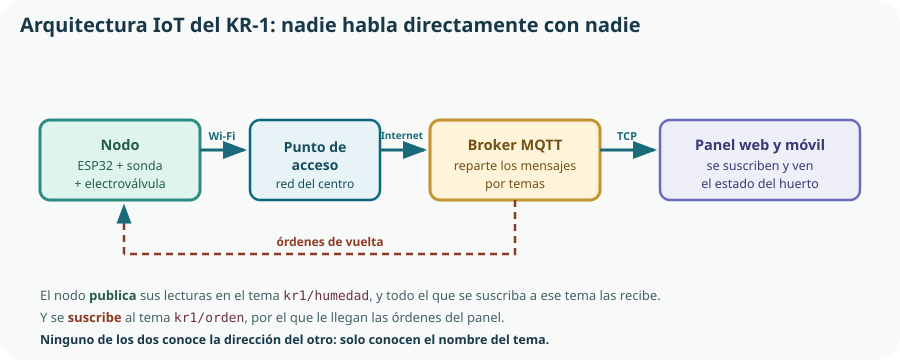

Este tema cierra el Bloque E y es el puente al Bloque F. El KR-1 ya sabe medir, decidir, actuar y recordar; lo que le falta es hablar. Y hablar, en un sistema técnico, no es enviar un mensaje bonito: es elegir una arquitectura, un protocolo y un formato de datos, y hacerlo teniendo en cuenta la seguridad, la privacidad y el consumo. Es, además, el contenido que el currículo enumera como «tecnologías emergentes».
- explicar qué es el internet de las cosas y qué lo distingue de conectar un ordenador a la red;
- describir las cuatro capas de una solución IoT y situar cada componente del KR-1;
- explicar qué necesita una placa para ser un nodo de red: identificación, alimentación y conectividad;
- conectar un ESP32 a una red Wi-Fi desde MicroPython y comprobar la conexión;
- distinguir MQTT de HTTP y decidir cuál conviene en cada caso;
- explicar el modelo de publicación y suscripción, y el papel de los temas;
- publicar una lectura en formato JSON y suscribirse a un tema de órdenes;
- situar Bluetooth, Zigbee y LoRa frente al Wi-Fi en alcance, consumo y velocidad;
- valorar los riesgos de seguridad y privacidad de un dispositivo conectado y estimar su consumo.
1. Qué es el internet de las cosas
El internet de las cosas es la extensión de la red a objetos que no son ordenadores: sensores, electrodomésticos, vehículos, máquinas industriales, instalaciones. Lo que cambia no es la tecnología de red, que es la misma: lo que cambia son las restricciones.
| Aspecto | Ordenador | Nodo IoT |
|---|---|---|
| Energía | Enchufado; el consumo casi no importa. | Batería o panel: cada miliamperio cuenta. |
| Potencia de cálculo | Gigabytes de memoria. | Cientos de kilobytes. |
| Datos que envía | Megabytes o gigabytes. | Unas decenas de bytes cada varios minutos. |
| Quién lo maneja | Una persona delante. | Nadie: funciona solo durante meses. |
| Qué pasa si falla la red | El usuario lo ve y reacciona. | Tiene que reaccionar el propio dispositivo. |
| Mantenimiento | Actualizaciones frecuentes. | Difícil o imposible: está en un tejado o enterrado. |
2. Arquitectura de una solución IoT

| Capa | Qué hace | En el KR-1 |
|---|---|---|
| Dispositivo | Mide, decide y actúa. Es el nodo. | ESP32 con la sonda del Tema 11 y la electroválvula del Tema 8. |
| Red | Transporta los mensajes. | Wi-Fi del centro y, a partir de ahí, internet. |
| Plataforma | Recibe, reparte y guarda los datos. | Un broker MQTT y una base de datos sencilla. |
| Aplicación | Presenta la información y permite mandar órdenes. | El panel web del Tema 18 y el móvil. |
3. El ESP32 como nodo de red
Para que una placa sea un nodo de red necesita tres cosas, y conviene enumerarlas porque las tres dan problemas.
Identificación
Una dirección MAC única de fábrica, una dirección IP que le asigna la red y un nombre de cliente propio para el protocolo. Dos nodos con el mismo nombre se expulsan mutuamente.
Alimentación
El Wi-Fi es lo que más consume del nodo: de 28 mA en reposo pasa a unos 180 mA transmitiendo. Eso decide la batería y el panel del Tema 23.
Conectividad
Credenciales de la red, cobertura suficiente en el huerto y una política de qué hacer cuando la red no está.
4. Conectar la placa al Wi-Fi
import network
import time
SSID = "IES_Huerto"
CLAVE = "..." # nunca se escribe en el código que se publica
def conectar_wifi(tiempo_max_s=20):
"""Conecta a la red Wi-Fi. Devuelve True si lo consigue."""
wlan = network.WLAN(network.STA_IF)
wlan.active(True)
if wlan.isconnected():
return True
wlan.connect(SSID, CLAVE)
inicio = time.time()
while not wlan.isconnected():
if time.time() - inicio > tiempo_max_s:
print("Sin conexión tras", tiempo_max_s, "s")
return False
time.sleep(0.5)
print("Conectado. IP:", wlan.ifconfig()[0])
return Truewhile con límite de seguridad del Tema 14, y aquí se entiende por qué era una regla y no un consejo. Sin el tiempo_max_s, un router apagado deja la placa esperando para siempre: no riega, no mide y no avisa. Con el límite, la función devuelve False y el programa principal puede decidir seguir funcionando sin red, que es exactamente lo que debe hacer un sistema de riego.# El uso correcto: la red es opcional, el riego no
if conectar_wifi():
publicar_estado()
else:
print("Modo autónomo: se riega igual, se registra en el archivo local")
# ... y a continuación el bucle de control, que funciona en los dos casossecretos.py— que se importa y que se excluye del repositorio mediante .gitignore. Es exactamente la misma regla de privacidad del Tema 4, aplicada a un dato que no es personal pero sí sensible.5. MQTT y HTTP
Un protocolo es un conjunto de reglas acordadas para intercambiar mensajes. En el internet de las cosas conviven sobre todo dos, y sirven para cosas distintas.
HTTP · petición y respuesta
El cliente pregunta y el servidor responde. Es el protocolo de la Web. Simple, universal y con una limitación: el servidor no puede iniciar la conversación. Para saber si hay una orden nueva, el nodo tiene que preguntar cada cierto tiempo.
MQTT · publicación y suscripción
Los dispositivos se conectan a un broker y le entregan mensajes etiquetados con un tema. El broker los reparte a todos los suscritos a ese tema. La conexión queda abierta, de modo que una orden llega al instante sin preguntar.
| Criterio | MQTT | HTTP |
|---|---|---|
| Modelo | Publicación y suscripción | Petición y respuesta |
| Tamaño del mensaje | Cabecera de pocos bytes | Cabeceras de cientos de bytes |
| Consumo | Bajo: conexión abierta y mensajes mínimos | Mayor: cada petición reabre y repite cabeceras |
| Órdenes hacia el dispositivo | Inmediatas | Solo si el dispositivo pregunta |
| Varios receptores | Naturales: todos los suscritos | Hay que pedirlo uno a uno |
| Facilidad | Requiere un broker | Vale cualquier servidor web |
| Uso típico | Telemetría y control de dispositivos | Enviar un dato a un servicio o consultar una página |
kr1/bancal2/humedad, kr1/bancal2/orden. Y quien se suscribe puede usar comodines: kr1/+/humedad recibe la humedad de todos los bancales, y kr1/# todo lo del proyecto. Diseñar bien el árbol de temas al principio es lo que permite añadir un segundo bancal después sin tocar el panel.6. Publicar las lecturas
Los datos se envían como texto, y el formato convenido en el internet de las cosas es JSON: exactamente el diccionario del Tema 15, escrito como cadena.
import ujson
from umqtt.simple import MQTTClient
BROKER = "broker.ejemplo.org"
CLIENTE = "kr1-bancal2" # único: dos iguales se expulsan
TEMA_DATOS = b"kr1/bancal2/humedad"
def publicar(cliente, humedad_pct, cuentas, rego):
"""Publica una lectura en formato JSON."""
mensaje = {
"humedad_pct": round(humedad_pct, 1),
"cuentas": cuentas,
"rego": rego,
}
cliente.publish(TEMA_DATOS, ujson.dumps(mensaje))
cliente = MQTTClient(CLIENTE, BROKER, keepalive=60)
cliente.connect()
publicar(cliente, 8.5, 2847, True)
# Se envía: {"humedad_pct": 8.5, "cuentas": 2847, "rego": true}7. Recibir órdenes
TEMA_ORDEN = b"kr1/bancal2/orden"
riego_bloqueado = False
def al_recibir(tema, mensaje):
"""Se ejecuta cada vez que llega un mensaje del broker."""
global riego_bloqueado
orden = ujson.loads(mensaje)
if orden.get("bloquear") is True:
riego_bloqueado = True
print("Riego bloqueado por orden remota")
elif orden.get("bloquear") is False:
riego_bloqueado = False
print("Riego desbloqueado")
cliente.set_callback(al_recibir)
cliente.subscribe(TEMA_ORDEN)
# En el bucle principal, comprobar si ha llegado algo
while True:
cliente.check_msg() # no bloquea: mira y sigue
humedad = leer_humedad()
if humedad < UMBRAL and not riego_bloqueado:
regar(30)
publicar(cliente, humedad, 0, False)
time.sleep(900)al_recibir no la llama tu programa: la llama la biblioteca cuando llega un mensaje. Se le llama función de respuesta o callback, y es la primera vez en el curso que aparece código que no se ejecuta en el orden en que está escrito. Es también el motivo de la única variable global del bloque: la función tiene que comunicar al programa principal que el estado ha cambiado, y global es la forma sencilla de hacerlo. En el Tema 18 esto se resolverá mejor, con una máquina de estados.8. Otras tecnologías de enlace
El Wi-Fi no es la única forma de conectar un nodo, y conviene saber qué existe, aunque en este curso no las usemos. Se estudian a nivel de reconocimiento: para qué sirve cada una y por qué no es la elegida aquí.
| Tecnología | Alcance | Velocidad | Consumo | Uso típico |
|---|---|---|---|---|
| Wi-Fi | Decenas de metros | Alta | Alto | Nodos con alimentación disponible y acceso a un router. El KR-1. |
| Bluetooth de baja energía | Unos 10 m | Baja | Muy bajo | Pulseras, sensores que se leen con el móvil al pasar. No llega a internet solo. |
| Zigbee | Decenas de metros, en malla | Baja | Muy bajo | Domótica del Tema 23: muchos nodos que se reenvían entre sí. Necesita pasarela. |
| LoRa | Kilómetros | Muy baja | Muy bajo | Sensores agrícolas o urbanos aislados. Pocos bytes cada muchos minutos. |
9. Seguridad, privacidad y consumo
Seguridad
| Riesgo | Qué podría pasar en el KR-1 | Medida mínima |
|---|---|---|
| Mensajes sin cifrar | Cualquiera en la red ve las lecturas y las órdenes. | Usar MQTT sobre TLS cuando el broker lo admita. |
| Broker abierto | Cualquiera publica en tu tema y ordena regar. | Usuario y contraseña en el broker; temas con permisos. |
| Credenciales en el código | La clave del Wi-Fi publicada en el repositorio. | Archivo aparte excluido del control de versiones. |
| Contraseñas por omisión | Un dispositivo con la clave de fábrica es de acceso público. | Cambiarlas todas antes de conectar nada. |
| Órdenes maliciosas | Alguien vacía el depósito regando sin parar. | Protecciones en el nodo, no en la red: límite de tiempo y de riegos diarios. |
| Sin actualizaciones | Una vulnerabilidad conocida sigue abierta años. | Prever cómo se actualizará el nodo antes de instalarlo. |
Privacidad
Consumo del nodo
| Estrategia | Wi-Fi | Consumo medio | Energía diaria |
|---|---|---|---|
| Siempre conectado | Activo las 24 h | ≈ 120 mA | ≈ 9,5 Wh |
| Conectar solo para publicar | 30 s cada 15 min | ≈ 31 mA | ≈ 2,5 Wh |
| Sueño profundo entre medidas | 30 s cada 15 min, resto dormido | ≈ 4 mA | ≈ 0,3 Wh |
Comprueba lo que has aprendido
Este tema se demuestra con un nodo que publica de verdad, obedece una orden y sigue funcionando cuando se le quita la red.
| Aspecto | Qué debes demostrar | Evidencias posibles |
|---|---|---|
| Arquitectura | Que sitúas cada componente en su capa y justificas el protocolo elegido. | Diagrama de las cuatro capas de tu sistema y una comparación razonada entre MQTT y HTTP. |
| Conexión | Que el nodo se conecta, informa de su IP y no se bloquea si no hay red. | Función de conexión con tiempo máximo y prueba con el router apagado: el sistema sigue regando. |
| Publicación | Que envías datos con nombre, en JSON, con una cadencia razonada. | Mensajes recibidos en el broker, árbol de temas diseñado y política de cadencia más eventos. |
| Suscripción | Que una orden remota cambia el comportamiento sin poder anular una protección. | Bloqueo remoto funcionando y comprobación de que el límite de tiempo de riego sigue actuando. |
| Seguridad y privacidad | Que has identificado los riesgos y aplicado las medidas mínimas. | Credenciales fuera del repositorio, broker con usuario y contraseña, y un apartado de privacidad en la memoria. |
| Consumo | Que estimas el consumo del nodo y eliges una estrategia de conexión. | Tabla de consumo de las tres estrategias con la energía diaria y la elección justificada. |
Prueba definitiva del bloque: desconecta el router. El KR-1 debe seguir midiendo, seguir riegando cuando toque, seguir registrando en su archivo local y volver a publicar solo cuando la red regrese. Si se queda colgado, todavía no es un sistema de control.
Glosario del tema
- Broker
- Servidor intermediario que recibe los mensajes publicados y los reparte a los suscritos a cada tema.
- Cliente
- Dispositivo o programa que se conecta a un broker o a un servidor; su nombre debe ser único.
- Dirección IP
- Dirección que identifica un dispositivo en una red; la asigna el router y puede cambiar.
- Dirección MAC
- Identificador único de fábrica del interfaz de red de un dispositivo.
- Función de respuesta
- Función que no llama el programa principal, sino la biblioteca cuando ocurre un suceso.
- HTTP
- Protocolo de petición y respuesta propio de la Web; el servidor no puede iniciar la conversación.
- Internet de las cosas
- Extensión de la red a objetos que no son ordenadores, con fuertes restricciones de energía, cálculo y mantenimiento.
- JSON
- Formato de texto para intercambiar datos con pares de clave y valor; equivalente a un diccionario.
- LoRa
- Tecnología de enlace de muy largo alcance, baja velocidad y bajo consumo.
- Malla
- Topología en la que los nodos reenvían los mensajes de los demás, de modo que la red se reconfigura sola.
- MQTT
- Protocolo ligero de publicación y suscripción, pensado para dispositivos con pocos recursos.
- Nodo
- Dispositivo que mide, decide y actúa dentro de una solución IoT.
- Pasarela
- Dispositivo que traduce entre una tecnología de enlace local e internet.
- Protocolo
- Conjunto de reglas acordadas para intercambiar mensajes.
- Publicación y suscripción
- Modelo en el que quien envía y quien recibe no se conocen: solo comparten el nombre de un tema.
- Sueño profundo
- Modo de muy bajo consumo en el que la placa apaga casi todo y despierta por temporizador.
- Tema
- Etiqueta jerárquica con la que se clasifica un mensaje MQTT.
- Zigbee
- Tecnología de enlace de bajo consumo y topología en malla, habitual en domótica.
Resumen esencial
- Lo que distingue un nodo IoT de un ordenador no es la tecnología de red: son las restricciones de energía, cálculo, datos y mantenimiento.
- La restricción que ordena todas las decisiones es que nadie va a estar delante: el nodo debe reconectarse solo y quedar en estado seguro si falla.
- Un sistema que no puede trabajar sin red es más frágil, no más moderno: el KR-1 riega sin internet y usa la red solo para informar.
- Una solución IoT tiene cuatro capas: dispositivo, red, plataforma y aplicación; y a veces una pasarela entre las dos primeras.
- La MAC viene de fábrica y no cambia; la IP la asigna el router y puede cambiar, y por eso el panel no puede llamar al nodo por su dirección.
- Todo bucle de conexión lleva tiempo máximo: sin él, un router apagado deja la placa esperando para siempre.
- Las credenciales van en un archivo aparte excluido del repositorio, porque el historial conserva lo que se publica una vez.
- HTTP es petición y respuesta; MQTT es publicación y suscripción, con mensajes mínimos y órdenes inmediatas.
- En MQTT el nodo y el panel no se conocen: solo comparten el nombre de un tema, organizado por niveles como carpetas.
- Los datos viajan en JSON, con cada campo con su nombre, de modo que añadir una medida no rompe lo que ya funcionaba.
- Se publica con una cadencia fija y además ante cada suceso relevante; no cada lectura.
- Una orden remota puede impedir una acción pero nunca desactivar una protección: las protecciones viven en el nodo.
- Alcance, velocidad y consumo no se pueden tener a la vez: Wi-Fi, Bluetooth de baja energía, Zigbee y LoRa sacrifican uno cada uno.
- Un objeto conectado es un objeto atacable, y la pregunta de diseño es qué puede hacer alguien si lo controla.
- Un sensor puede generar datos personales; se mide solo lo necesario y se pregunta antes de instalarlo donde haya personas.
- El sueño profundo divide el consumo por más de treinta, a cambio de no recibir órdenes mientras duerme.
Fuentes y recursos fiables
- [1] MicroPython — Referencia rápida del ESP32 (en inglés). Módulo
networky modos de bajo consumo. - [2] MQTT.org (en inglés). Especificación y documentación del protocolo.
- [3] JSON — Especificación del formato (en español).
- [4] INCIBE — Instituto Nacional de Ciberseguridad. Guías de seguridad de dispositivos conectados.
- [5] Agencia Española de Protección de Datos. Tratamiento de datos personales e internet de las cosas.
- [6] Wokwi. Simulación de ESP32 con Wi-Fi y MQTT en el navegador.
- [7] Decreto 64/2022, de 20 de julio (BOCM). Currículo de Tecnología e Ingeniería I, bloque E: internet de las cosas y protocolos de comunicación.